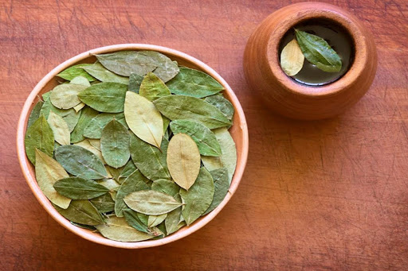
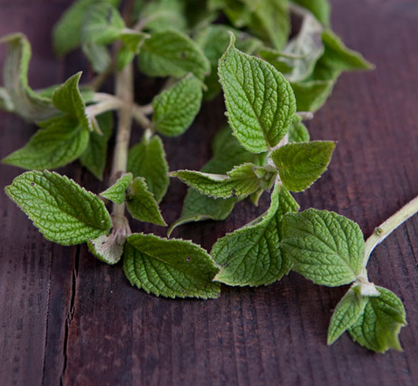
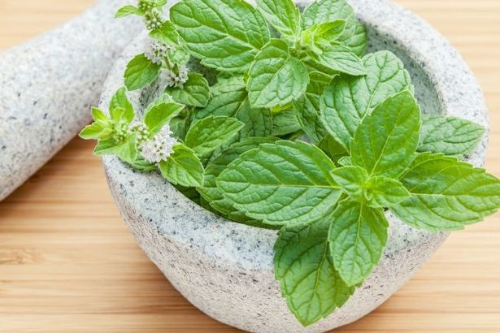
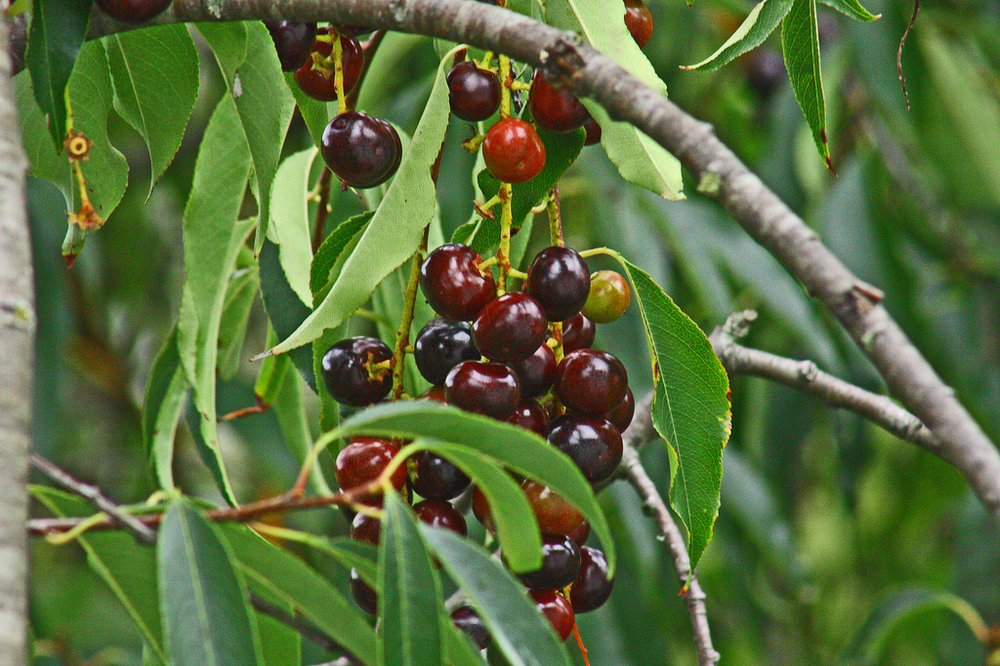

Entre los meses de Abril a Octubre, por las noches la temperatura baja considerablemente, en las primeras horas de la mañana la tempreratura sube paulatinamente hasta pasado el medio dia.
| Estación | Clima | T min.(°C) | T max.(°C) |
|---|---|---|---|
| Época de Estiaje (Abril - Octubre) | Seco | -2 | 20 |
| Época de Lluvias (Noviembre - Marzo) | Lluvioso | 5 | 23 |
Según el último informe del Instituto Nacional de Estadística e Informática (INEI), la población de las provincias del Cusco es la siguiente.
| Provincia | Altitud(m.s.n.m) | Población |
|---|---|---|
| Cuzco | 3 414 | 456 800 |
| Acomayo | 3 219 | 28 000 |
| Anta | 3 345 | 56 900 |
| Calca | 2 905 | 74 700 |
| Canas | 3 910 | 39 800 |
| Canchis | 3 548 | 97 000 |
| Chumbivilcas | 3 678 | 83 200 |
| Espinar | 3 924 | 69 900 |
| La Convención | 1 063 | 180 800 |
| Paruro | 3 068 | 30700 |
| Paucartambo | 3 005 | 51 500 |
| Quispicanchi | 3 158 | 90 400 |
| Urubamba | 2 869 | 65 100 |
En las ciudades o lugares de mayor altura, el nivel de
oxígeno es cada vez más bajo. Como nuestro cerebro
necesita oxígeno y está acostumbrado a recibir mayor
cantidad en las zonas en las que vivimos, que suelen
ser de menor altura, cuando llegamos a sitios más
altos el cuerpo nota esa falta.
Según explican los expertos, el mal de altura o soroche
puede empezar a afectar desde los 2,400 m.s.n.m, como
Cusco que está ubicada a 3399 msnm es por eso que sus
visitantes con frecuencia llegan a padecer de un típico
mal conocido como el mal de altura, soroche o mal de montaña.
¡No tienes por qué temerle al soroche! Aunque sus síntomas no son agradables, hay muchas maneras que nos ayudan con el tratamiento del mal de altura. ¡Aquí te dejo algunos consejos!
Una de las medidas que tienes que tomar antes de viajar a un lugar situado a gran altura es comer de manera ligera. Dos días antes de empezar tu viaje comienza a comer platos ricos en carbohidratos y azúcares naturales.
Te recomendamos tomarte los primeros días en Cusco con calma y sin realizar actividades que te exijan un gran esfuerzo físico.
Antes de sentir los síntomas del soroche puedes prevenir su aparición tomando hojas o mate de coca (los encontrarás en cualquier tienda, bar u hospedaje de Cusco). Además, también puedes acercarte a cualquier farmacia de la ciudad y comprar pastillas para el soroche.
La altura también provoca que el aire sea más seco y que, consecuentemente, nuestro cuerpo necesite más agua para estar hidratado. Por eso, te recomendamos llevar siempre una botella de agua en tu mochila y beber constantemente, aunque no tengas sed.
El alcohol es una bebida que provoca la deshidratación del cuerpo, por lo que te recomendamos no excederte con él durante tu visita a Cusco.
Los Incas fueron nuestros principales exponentes de la medicina natural en nuestra zona geográfica. El uso de estas plantas faculta una solución rápida y viable, sin el uso de fármacos, para poder contrarrestar la sintomatología propia del mal de altura de montaña. Las principales plantas usadas son: Hoja de coca, muña, menta y capulí.
Erythroxylon coca, usada principalmente por medio de infusiones. Es un estimulante, analgésico, digestivo y regulador de la presión sanguínea.
Minthostachys setosa, se puede utilizar en infusiones. Tiene un uso medicinal para tratar la cefalea, gastritis, mal de altura de montaña. Se comprobó su capacidad antiséptica, analgésica y carminativa. Después de la hoja de coca, es una especie botánica tradicional en la medicina de la cultura Inca.
Mentha piperita, la composición bioquímica presenta principalmente eugenol y ácido rosmarínico, los cuales son anticoagulantes. Estos pueden mejorar la circulación pero en dosis mínimas en caso de personas que presenten diabetes, su uso se basa en infusiones.
Prunus capulí Cav. Al ser un árbol de 20 metros de alto, tiene tres formas de aplicación, el fruto se usa como depurativo, las hojas como regulador del ritmo cardiaco y para el mal de altura y la corteza del árbol como anti-reumático.
